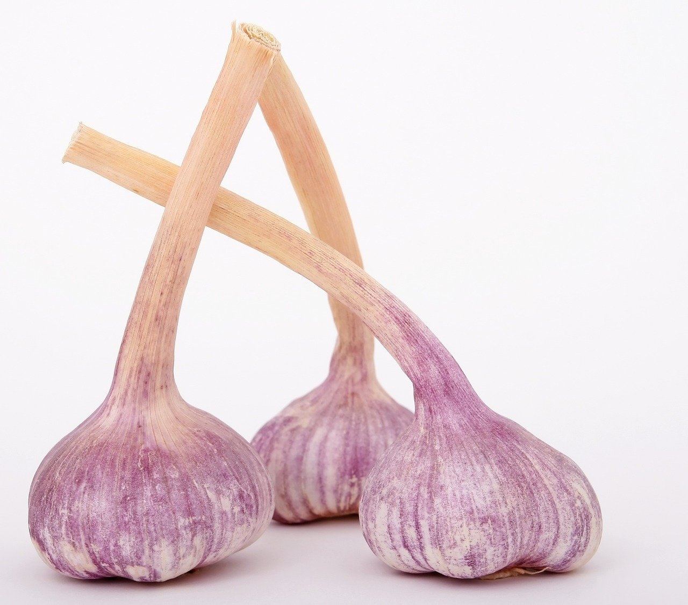
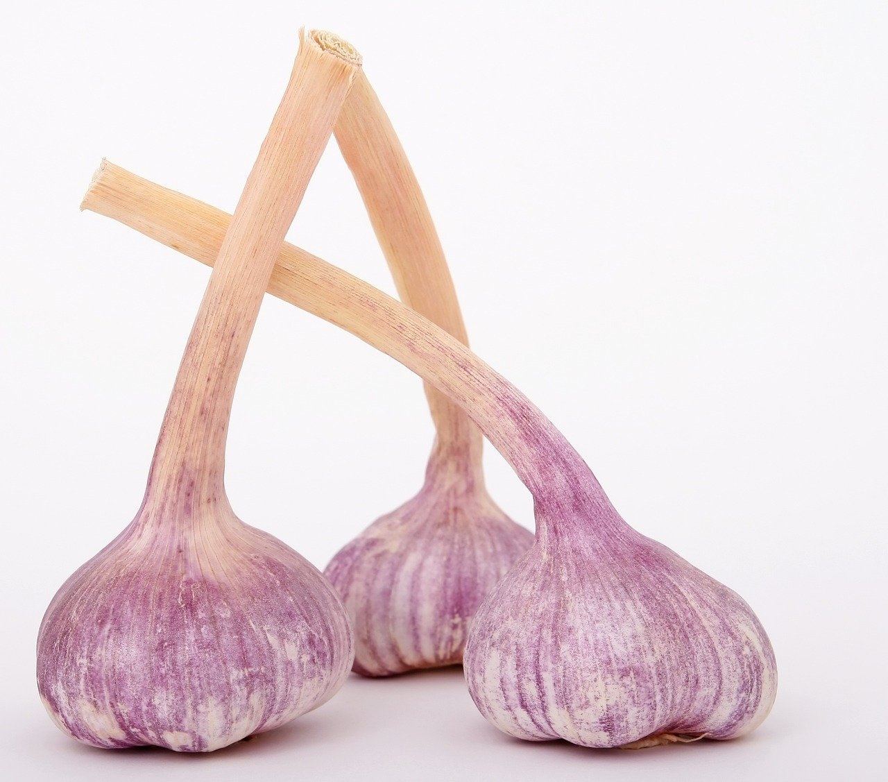

Чеснок эубиотичен, благодаря витаминам C, B, D, PP способствует нормализации функций аутомикрофлоры. Улучшает процессы пищеварения, усиливает образование и выделение желчи, снижает содержание холестерина и сахара в крови, благоприятно действует на обмен веществ, особенно у больных сахарным диабетом, при ожирении. Благодаря органическим кислотам, витаминам, макро- и микроэлементам (особенно магнию, калию, селену, цинку, марганцу) стимулирует кроветворение, проявляет антигипоксический и ангиопротекторный эффекты. Кардиотоническое действие в сочетании с расширением периферических сосудов и гиполипидемическим действием способствует нормализации функций сердечно-сосудистой системы, особенно у пациентов пожилого возраста. Противоглистный эффект проявляется при аскаридозе и энтеробиозе.
Морковь содержит витамины группы С, PP, В, К, Е. Каротин, который присутствует в моркови, в организме человека моментально превращается в витамин А. Наряду с этим следует отметить большое количество минеральных веществ – железа, фосфора, калия, магния, меди, кобальта, цинка, йода, а также фтора и никеля. Благодаря эфирным маслам морковь имеет тонкий, но приятный аромат. Доказаны целительные свойства овоща при таких заболеваниях как близорукость и конъюнктивит. Также морковь используется для укрепления сетчатки глаза. Главным образом морковь применяется в питании человека. Свежая морковь отлично укрепляет десны и способствует росту. Этот овощ отличается благотворным действием на кожу и слизистые. Пюре из сырой моркови показано при колитах, заболеваниях почек и печени. Морковный сок эффективен при малокровии и нарушениях сердечно-сосудистой системы. Помимо этого, он является целительным средством при раковых образованиях и язвах.
В старинном лечебнике XVII века «Прохладный вертоград» указано, что растение использовали в медицине того времени как противовоспалительное, ранозаживляющее и мочегонное средство, для укрепления дёсен, сохранения зрения, при потере аппетита и расстройстве пищеварения, при мочекаменной болезни, а также при болезнях печени и почек и др. В XIX веке из семян был получен препарат, применявшийся при дисменорее, невралгии и малярии. Различные блюда с использованием петрушки имеют мочегонное действие, способствуют выведению солей из организма. Зелень петрушки уменьшает потливость, показана при заболеваниях почек и печени, атеросклерозе. Некоторые зарубежные учёные считают, что свежий сок петрушки способствует нормализации функций коры надпочечников и щитовидной железы, укреплению капиллярных кровеносных сосудов и др. В клинических испытаниях было показано, что при употреблении препаратов петрушки повышается тонус гладкой мускулатуры матки, кишечника, мочевого пузыря. Свежие листья петрушки или их отвар в экспериментальных исследованиях увеличивали жёлчеотделение. Отвар петрушки был предложен для лечения гипотонических и гипокинетических дискинезий жёлчного пузыря. Различные препараты петрушки используют при цистите, мочекаменной болезни, отёках, почечных спазмах (противопоказаны при нефрите), при воспалении предстательной железы.

Химический состав клубней зависит от сорта, условий выращивания (климатических, погодных, типа почвы, применяемых удобрений, агротехники возделывания), зрелости клубней, сроков и условий хранения и др. В среднем картофель содержит (в %): воды 75; крахмала 18,2; азотистых веществ (сырой белок) 2; сахаров 1,5; клетчатки 1; жиров 0,1; титруемых кислот 0,2; веществ фенольной природы 0,1; пектиновых веществ 0,6; прочих органических соединений (нуклеиновых кислот, гликоалкалоидов, гемицеллюлоз и др.) 1,6; минеральных веществ 1,1. Условно различают сорта картофеля с высоким содержанием сухих веществ (более 25 %), средним (22—25 %) и низким (менее 22 %). Крахмал составляет 70—80 % всех сухих веществ клубня. Находится крахмал в клетках в виде слоистых крахмальных зёрен размером от 1 до 100 мкм, но чаще 20—40 мкм. Содержание крахмала зависит от скороспелости сортов, которое выше у позднеспелых. В процессе хранения количество крахмала в клубнях уменьшается в результате гидролитического распада его до сахаров. В большей мере снижается содержание крахмала при низкой температуре (1—2 °C). Сахара в картофеле представлены глюкозой (около 65 % к общему сахару), фруктозой (5 %) и сахарозой (30 %), в незначительном количестве встречается мальтоза, обычно при прорастании картофеля. Наряду со свободными сахарами в картофеле имеются фосфорные эфиры сахаров (глюкозо-1-фосфат, фруктозо-6-фосфат и др.).
С древних времен люди употребляли плоды оливы в пищу и изготавливали из них оливковое масло.Маслины богаты жирами; выход масла на абсолютно сухое вещество в зависимости от помологического сорта колеблется от 50 до 80 %. Плоды богаты белками, пектинами, сахарами, витаминами: В, С, Е, Р-активными катехинами, содержат соли калия, фосфора, железа и других элементов. Кроме того, в плодах найдены углеводы, катехины, фенолкарбоновые кислоты, пектиновые вещества, тритерпеновые сапонины. В листьях содержатся органические кислоты, фитостерин, гликозид олейропеин, смолы, флавоноиды, лактон эленолид, горькие и дубильные вещества, эфирное масло, в состав которого входят эфиры, фенолы, камфен, эвгенол, цинеол, цитраль и спирты. В листьях содержатся гликозиды, органические кислоты, горечи, флавоноиды и танины. Масло плодов оливок является основным продуктом, ради которого главным образом и возделывается эта культура. Но плоды оливок находят широкое применение и в консервной промышленности для изготовления консервов из зелёных плодов, а из чёрных — маслин сухого посола. Используется оливковое прованское масло в пищевой промышленности при выработке деликатесных рыбных консервов (шпроты, сардины).

В медицине лук известен со времён Гиппократа. Лечебные свойства лука признавали все народы. Римляне считали, что сила и мужество солдат увеличиваются при употреблении лука, поэтому он входил в военный рацион. Припарками из лука в Древнем Риме лечили глазные болезни: лук вызывал слёзы, тем самым очищая и дезинфицируя глаза. В Египте луку воздавали почести, как божеству. При Гиппократе лук прописывали больным ревматизмом, подагрой, а также от ожирения. Знаменитый персидский врач и учёный Ибн Сина (Авиценна) в начале XI века писал о луке: «Съедобный лук особенно помогает от вреда плохой воды, если бросить в неё очистки лука, это одно из средств, уничтожающих её запах… Луковый сок полезен при загрязнённых ранах, смазывать глаза выжатым соком лука с мёдом полезно от бельма… Луковый сок помогает от ангины. Съедобный лук вследствие своей горечи укрепляет слабый желудок и возбуждает аппетит». На Востоке существовала поговорка: «Лук в твоих объятиях — проходит всякая болезнь». Время появления лука на Руси точно не установлено, но известно, что уже с давних пор он был одним из главных пищевых продуктов и считался универсальным средством, предохраняющим и излечивающим болезни. В старинных русских лечебниках-травниках приводили такую рекомендацию: «во время морового поветрия или иных прилипчивых болезней нужно развешивать в комнатах связки луковиц, отчего не проникает в них зараза, да и воздух в покоях очистится… Во время скотского падежа нанизывают на нитку поболее луковиц и чесночных головок и привязывают на шею коровам, лошадям и другим домашним животным, чтобы не заразились».
Свежий болгарский перец в основном (на 90-92%) состоит из воды. Остальное – углеводы, на долю которых приходится большая часть его калорий, и небольшое количество белков и жиров. Углеводы здесь – это сахара, которые отвечают за сладкий вкус спелого перца. Плоды растения содержит небольшое количество клетчатки – порядка 2% от общего веса. Сладкий перец включает комплекс различных витаминов и минералов с рекордными показателями по некоторым позициям. Так, всего один красный болгарский перец обеспечивает 150-170% рекомендуемой суточной нормы витамина С. Но содержатся в плодах и ряд других витаминов: пиридоксин (самая распространённая форма витамина B6) важный для продуцирования красных кровяных телец. филлохинон (одна из форм витамина К), играющий существенную роль в свёртывании крови и прочности костей, витамин E, необходимый для функционирования нервной и мышечной систем, витамин B9, выполняющий множество задач, и приобретающий особое значение во время беременности, бета-каротин красного сладкого перца (провитамин А), отвечающий за окислительно-восстановительные процессы, обмен веществ, регуляцию синтеза белков, функциональность мембран клеток.
К лекарственным растениям относят лесную яблоню. Ее плоды содержат углеводы: фитогликоген, пектины; органические кислоты: яблочную, винную, лимонную; каротиноиды, витамин С, хлорогеновую кислоту, дубильные вещества, катехины, флавоноиды, антоцианы, лейкоантоцианидины, эфирное масло, органические соединения железа и фосфора. В состав листьев входят дигидрохалконы: флоретин, флоридзин; флавоноиды: гиперин, кверцетин, кверцитрин, изокверцитрин, рутин, нарингенин; катехины, аскорбиновая кислота. Чай из плодов яблони лесной назначают при мочекаменной болезни, подагре, ревматизме, кашле и охриплости, катаре желудка и колитах. Печеные яблоки рекомендуют при хронических запорах. Свежие яблоки показаны при гастрите с пониженной кислотностью (гипоацидном гастрите), спастическом колите, дискинезии желчевыводящих путей по гипокинетическому типу, при авитаминозах. Наружно свеженатёртые яблоки используют для лечения ссадин, ожогов, обморожений, долго не заживающих язв, трещин на сосках у кормящих. В дерматологии яблочные аппликации применяют при воспалительных кожных заболеваниях. Отвар из листьев яблони используют как источник витамина С.